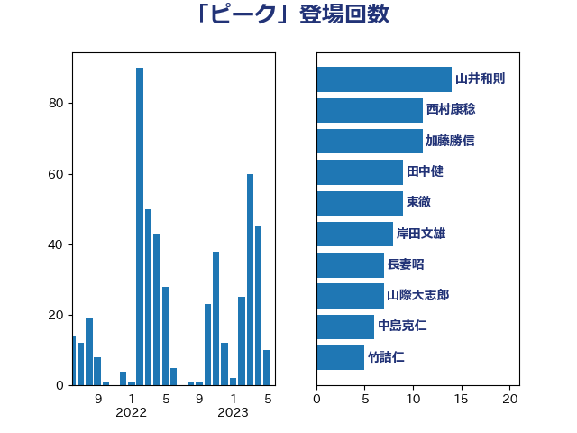

単語「ピーク」

| 田村憲久 | 自由民主党 | 21 回 |
| 山井和則 | 立憲民主党 | 16 回 |
| 西村康稔 | 自由民主党 | 14 回 |
| 梅村聡 | 日本維新の会 | 12 回 |
| 上田清司 | 国民民主党 | 11 回 |
| 長妻昭 | 立憲民主党 | 9 回 |
| 倉林明子 | 日本共産党 | 8 回 |
| 田中健 | 国民民主党 | 8 回 |
| 小泉進次郎 | 自由民主党 | 7 回 |
| 山際大志郎 | 自由民主党 | 7 回 |
| 階猛 | 立憲民主党 | 7 回 |
| 浜口誠 | 国民民主党 | 6 回 |
| こやり隆史 | 自由民主党 | 5 回 |
| 中島克仁 | 立憲民主党 | 5 回 |
| 中谷一馬 | 立憲民主党 | 5 回 |
| 伊藤孝恵 | 国民民主党 | 5 回 |
| 大塚耕平 | 国民民主党 | 5 回 |
| 小川淳也 | 立憲民主党 | 5 回 |
| 杉尾秀哉 | 立憲民主党 | 5 回 |
| 杉本和巳 | 日本維新の会 | 5 回 |
| 玉木雄一郎 | 国民民主党 | 5 回 |
| 宮本徹 | 日本共産党 | 4 回 |
| 後藤茂之 | 自由民主党 | 4 回 |
| 東徹 | 日本維新の会 | 4 回 |
| 源馬謙太郎 | 立憲民主党 | 4 回 |
| 片山大介 | 日本維新の会 | 4 回 |
| 田村智子 | 日本共産党 | 4 回 |
| 紙智子 | 日本共産党 | 4 回 |
| 舟山康江 | 国民民主党 | 4 回 |
| 足立敏之 | 自由民主党 | 4 回 |
| 原口一博 | 立憲民主党 | 3 回 |
| 吉川沙織 | 立憲民主党 | 3 回 |
| 塩田博昭 | 公明党 | 3 回 |
| 寺田静 | 無所属 | 3 回 |
| 岩渕友 | 日本共産党 | 3 回 |
| 打越さく良 | 立憲民主党 | 3 回 |
| 梶山弘志 | 自由民主党 | 3 回 |
| 横沢高徳 | 立憲民主党 | 3 回 |
| 櫻井充 | 自由民主党 | 3 回 |
| 田村まみ | 国民民主党 | 3 回 |
| 田村貴昭 | 日本共産党 | 3 回 |
| 石川香織 | 立憲民主党 | 3 回 |
| 谷川とむ | 自由民主党 | 3 回 |
| 赤澤亮正 | 自由民主党 | 3 回 |
| 高橋千鶴子 | 日本共産党 | 3 回 |
| ながえ孝子 | 無所属 | 2 回 |
| 中川宏昌 | 公明党 | 2 回 |
| 中川貴元 | 自由民主党 | 2 回 |
| 井上信治 | 自由民主党 | 2 回 |
| 仁木博文 | 無所属 | 2 回 |
| 佐藤茂樹 | 公明党 | 2 回 |
| 吉田とも代 | 日本維新の会 | 2 回 |
| 坂本哲志 | 自由民主党 | 2 回 |
| 大串正樹 | 自由民主党 | 2 回 |
| 小島敏文 | 自由民主党 | 2 回 |
| 小池晃 | 日本共産党 | 2 回 |
| 岩田和親 | 自由民主党 | 2 回 |
| 岸田文雄 | 自由民主党 | 2 回 |
| 武部新 | 自由民主党 | 2 回 |
| 江田憲司 | 立憲民主党 | 2 回 |
| 河野太郎 | 自由民主党 | 2 回 |
| 河野義博 | 公明党 | 2 回 |
| 清水貴之 | 日本維新の会 | 2 回 |
| 玄葉光一郎 | 立憲民主党 | 2 回 |
| 田嶋要 | 立憲民主党 | 2 回 |
| 矢倉克夫 | 公明党 | 2 回 |
| 石垣のりこ | 立憲民主党 | 2 回 |
| 荒井優 | 立憲民主党 | 2 回 |
| 萩生田光一 | 自由民主党 | 2 回 |
| 野上浩太郎 | 自由民主党 | 2 回 |
| 金城泰邦 | 公明党 | 2 回 |
| 金子恭之 | 自由民主党 | 2 回 |
| 馬場成志 | 自由民主党 | 2 回 |
| 上田英俊 | 自由民主党 | 1 回 |
| 下村博文 | 自由民主党 | 1 回 |
| 中野英幸 | 自由民主党 | 1 回 |
| 串田誠一 | 日本維新の会 | 1 回 |
| 丸川珠代 | 自由民主党 | 1 回 |
| 井坂信彦 | 立憲民主党 | 1 回 |
| 井林辰憲 | 自由民主党 | 1 回 |
| 伊佐進一 | 公明党 | 1 回 |
| 伊藤俊輔 | 立憲民主党 | 1 回 |
| 前原誠司 | 国民民主党 | 1 回 |
| 加藤鮎子 | 自由民主党 | 1 回 |
| 勝目康 | 自由民主党 | 1 回 |
| 北村経夫 | 自由民主党 | 1 回 |
| 古賀友一郎 | 自由民主党 | 1 回 |
| 吉田久美子 | 公明党 | 1 回 |
| 吉田統彦 | 立憲民主党 | 1 回 |
| 吉良よし子 | 日本共産党 | 1 回 |
| 和田政宗 | 自由民主党 | 1 回 |
| 嘉田由紀子 | 無所属 | 1 回 |
| 国光あやの | 自由民主党 | 1 回 |
| 塩川鉄也 | 日本共産党 | 1 回 |
| 大岡敏孝 | 自由民主党 | 1 回 |
| 大西健介 | 立憲民主党 | 1 回 |
| 奥野総一郎 | 立憲民主党 | 1 回 |
| 宮口治子 | 立憲民主党 | 1 回 |
| 宮崎政久 | 自由民主党 | 1 回 |
| 宮崎雅夫 | 自由民主党 | 1 回 |
| 宮本岳志 | 日本共産党 | 1 回 |
| 山下芳生 | 日本共産党 | 1 回 |
| 山岡達丸 | 立憲民主党 | 1 回 |
| 山崎正恭 | 公明党 | 1 回 |
| 山崎誠 | 立憲民主党 | 1 回 |
| 山本博司 | 公明党 | 1 回 |
| 山添拓 | 日本共産党 | 1 回 |
| 山田賢司 | 自由民主党 | 1 回 |
| 岡本あき子 | 立憲民主党 | 1 回 |
| 平井卓也 | 自由民主党 | 1 回 |
| 平林晃 | 公明党 | 1 回 |
| 斉藤鉄夫 | 公明党 | 1 回 |
| 斎藤嘉隆 | 立憲民主党 | 1 回 |
| 末次精一 | 立憲民主党 | 1 回 |
| 杉久武 | 公明党 | 1 回 |
| 村井英樹 | 自由民主党 | 1 回 |
| 柘植芳文 | 自由民主党 | 1 回 |
| 柚木道義 | 立憲民主党 | 1 回 |
| 柴田巧 | 日本維新の会 | 1 回 |
| 橋本岳 | 自由民主党 | 1 回 |
| 櫻井周 | 立憲民主党 | 1 回 |
| 武見敬三 | 自由民主党 | 1 回 |
| 池下卓 | 日本維新の会 | 1 回 |
| 浅野哲 | 国民民主党 | 1 回 |
| 浜野喜史 | 国民民主党 | 1 回 |
| 清水真人 | 自由民主党 | 1 回 |
| 渡辺創 | 立憲民主党 | 1 回 |
| 滝波宏文 | 自由民主党 | 1 回 |
| 田野瀬太道 | 無所属 | 1 回 |
| 石川大我 | 立憲民主党 | 1 回 |
| 石川昭政 | 自由民主党 | 1 回 |
| 石田昌宏 | 自由民主党 | 1 回 |
| 礒崎哲史 | 国民民主党 | 1 回 |
| 神田潤一 | 自由民主党 | 1 回 |
| 稲富修二 | 立憲民主党 | 1 回 |
| 芳賀道也 | 国民民主党 | 1 回 |
| 若松謙維 | 公明党 | 1 回 |
| 藤川政人 | 自由民主党 | 1 回 |
| 藤木眞也 | 自由民主党 | 1 回 |
| 西田昌司 | 自由民主党 | 1 回 |
| 西銘恒三郎 | 自由民主党 | 1 回 |
| 谷合正明 | 公明党 | 1 回 |
| 赤嶺政賢 | 日本共産党 | 1 回 |
| 越智隆雄 | 自由民主党 | 1 回 |
| 足立康史 | 日本維新の会 | 1 回 |
| 近藤和也 | 立憲民主党 | 1 回 |
| 進藤金日子 | 自由民主党 | 1 回 |
| 酒井庸行 | 自由民主党 | 1 回 |
| 重徳和彦 | 立憲民主党 | 1 回 |
| 野田聖子 | 自由民主党 | 1 回 |
| 長友慎治 | 国民民主党 | 1 回 |
| 阿達雅志 | 自由民主党 | 1 回 |
| 阿部司 | 日本維新の会 | 1 回 |
| 青木愛 | 立憲民主党 | 1 回 |
| 青柳陽一郎 | 立憲民主党 | 1 回 |
| 馬場伸幸 | 日本維新の会 | 1 回 |
| 高野光二郎 | 自由民主党 | 1 回 |